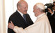
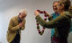
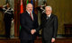

Политика
rss- Тепло пообщались и обменялись подарками: Лукашенко встретился с папой римским один на один

- 20 мая
- "Наша місія не скончаная. Усе наперадзе". Как "Весна" отметила юбилей
- МИД Беларуси: Минск не будет выстраивать отношения с ЕС в ущерб России
- Лукашенко: Беларусь всегда будет донором стабильности и порядочности по отношению к Италии и ЕС
- Ответ Статкевичу. Экс-кандидат в президенты Улахович собирает Конгресс патриотических сил
- Активисты БХД записались на прием к Щеткиной, но попали к ее заместителю
- Еврокомиссар от Литвы: У нас нет сведений, что Минск отмахивается от требований безопасности по АЭС
- Евросоюз жестче, чем обычно, отреагировал на очередной смертный приговор в Беларуси
- В Киеве объяснили задержку с запуском вещания украинского телеканала в Беларуси
- 19 мая
- На Совете спецслужб посоветовали беречь СНГ и рассказали о задержании в Беларуси террориста из РФ
- От ИГИЛ до уголовников-отморозков и битв за мозги. Спецслужбы СНГ обсудили главные угрозы
- Доверенное лицо Татьяны Короткевич: Наша команда на выборах подала в ЦИК липовые подписи
- Лукашенко - руководителям спецслужб СНГ: надо решать проблемы Карабаха, Украины и Приднестровья
- 18 мая
- Венецианская комиссия: Неправильно, когда президент назначает главу ЦИК
- Контактная группа по Украине: по обмену пленными прогресса нет
- Короткевич и Дмитриев попали в парламент. Пока на круглый стол
- Госдеп США: судьба санкций будет зависеть от парламентских выборов в Беларуси
- "Амплитуда". Насколько постсанкционная Беларусь "заметней" для инвесторов?
- Ригони: В парламенте нужна оппозиция, а Беларусь должна войти в ПАСЕ
- 17 мая
- Лукашенко в пятницу улетает в Рим для встреч с папой римским и президентом Италии
- ЦИК: члены комиссий будут считать голоса с трех сторон стола, четвертая будет открыта
- В Беларусь приехали дипломаты из Госдепа США обсуждать права человека
- Евродепутаты не получили "полных ответов" на встрече с Ермошиной
- "Служу Союзному государству". Ермошиной вручили почетный знак ЦИК России
- Пресс-секретарь президента о визите Лукашенко в Италию: Следите за сообщениями пресс-службы
- 16 мая
 Лавров рассказал студентам БГУ о войне с памятниками, Украине и ИГИЛ
Лавров рассказал студентам БГУ о войне с памятниками, Украине и ИГИЛ
- Активист Павел Сергей арестован на семь суток за участие в несанкционированном пикете
- Евродепутат: Сняв санкции с Беларуси, мы ждем, что власть снимет санкции со своего народа
- Лукашенко попросил Лаврова ввести его в курс дела "по некоторым событиям последнего времени"
- Лавров: попытки воевать с памятниками героев войны, освободивших Европу, абсолютно безнравственны
- Лавров: Беларусь и Россия озабочены продвижением НАТО на Восток
- Лавров обсудит в Минске вопросы безопасности и торговлю, а также июньский визит Путина
- 15 мая
- Гуселетов: К позиции Беларуси в отношениях с ЕС нужно относиться с определенной долей понимания
- Лидеры и активисты оппозиции подписали Декларацию в поддержку независимости Беларуси
- В Минске под открытым небом прошло собрание по созданию оппозиционного конгресса